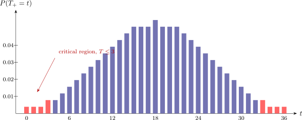

3.3 The Wilcoxon Signed-Rank Test
The sign test discards a great deal. It records that a difference was positive but not that it was large, so a subject who improved enormously counts exactly as much as one who improved by a hair. When the differences are measured on a scale where their sizes mean something, that information is worth keeping, and the Wilcoxon signed-rank test keeps it.
Proposed by Wilcoxon in the same 1945 paper as the rank-sum test, it applies to the same situations as the sign test — one sample, or paired data reduced to differences — and is almost always the better choice there.
Procedure
For a sample \(X_1,\dots ,X_n\) and a hypothesised median \(\theta _0\), form the differences \(d_i=X_i-\theta _0\); for paired data \(\left (Y_i,Z_i\right )\) take \(d_i=Y_i-Z_i\). Then
- (i).
- discard any \(d_i=0\) and reduce \(n\) accordingly, as in the sign test;
- (ii).
- rank the absolute differences \(\left |d_i\right |\) from \(1\) to \(n\), smallest first, using mid-ranks for ties;
- (iii).
- attach to each rank the sign of its \(d_i\);
- (iv).
- let \(T_{+}\) be the sum of the ranks carrying a plus and \(T_{-}\) the sum of those carrying a minus.
Since every rank goes into one sum or the other, \[T_{+}+T_{-}=\sum ^{n}_{i=1}i=\dfrac {n(n+1)}{2},\] which is the arithmetic check: if the two sums do not add to \(n(n+1)/2\), the ranking is wrong. For a two-sided test the statistic is \[T=\min \left (T_{+},T_{-}\right ).\]
The null hypothesis, and what it assumes
\[H_0:\text {the differences are symmetrically distributed about } 0 .\]
Symmetry is doing essential work here, and it is an assumption the sign test does not need. Under \(H_0\) a difference of any given magnitude is as likely to be negative as positive, independently across observations, so each rank \(1,2,\dots ,n\) carries a plus or a minus with probability \(\tfrac {1}{2}\) each. That is what makes the null distribution of \(T_{+}\) computable without knowing anything else about the population — and it is why the test is not valid for strongly skewed differences, where the sign test remains available.
Enumerating all \(2^{n}\) sign patterns gives the exact distribution. From it, \[E\left (T_{+}\right )=\dfrac {n(n+1)}{4},\hspace {0.8cm} \operatorname {var}\left (T_{+}\right )=\dfrac {n(n+1)(2n+1)}{24},\] the mean being half the total \(n(n+1)/2\) by symmetry. For \(n>20\), \[Z=\dfrac {T_{+}-\dfrac {n(n+1)}{4}}{\sqrt {\dfrac {n(n+1)(2n+1)}{24}}}\ \thicksim \ N(0,1);\] below that, exact tables of \(T\) are used, and \(H_0\) is rejected for small \(T\).

Example 3.3. Two treatments are compared on eight subjects.
| Obs | Sample 1 | Sample 2 | \(d = S_1-S_2\) | \(\left |d\right |\) | Rank of \(\left |d\right |\) |
| 1 | 9 | 8 | \(+1\) | 1 | \(2\) |
| 2 | 6 | 9 | \(-3\) | 3 | \(5\) |
| 3 | 8 | 10 | \(-2\) | 2 | \(4\) |
| 4 | 7 | 7 | \(0\) | — | discarded |
| 5 | 10 | 6 | \(+4\) | 4 | \(6\) |
| 6 | 5 | 4 | \(+1\) | 1 | \(2\) |
| 7 | 6 | 5 | \(+1\) | 1 | \(2\) |
| 8 | 7 | 7 | \(0\) | — | discarded |
Two pairs are discarded, so \(n' = 6\). The absolute differences in order are \[1,\ 1,\ 1,\ 2,\ 3,\ 4 .\] The three \(1\)’s would occupy ranks \(1, 2, 3\); being tied they each receive the average \(\frac {1+2+3}{3} = 2\). The remaining values take ranks \(4\), \(5\), \(6\).
| \(\left |d\right |\) sorted | 1 | 1 | 1 | 2 | 3 | 4 |
| Provisional rank | 1 | 2 | 3 | 4 | 5 | 6 |
| Rank used (ties averaged) | \(2\) | \(2\) | \(2\) | \(4\) | \(5\) | \(6\) |
| Sign of \(d\) | \(+\) | \(+\) | \(+\) | \(-\) | \(-\) | \(+\) |
Hence \[T_{+} = 2 + 2 + 2 + 6 = 12, \qquad T_{-} = 4 + 5 = 9,\] and the check holds: \(12 + 9 = 21 = \dfrac {6(7)}{2}\).
Note 3.4. Ties must be averaged, even when it seems not to matter. In this example the provisional ranks \(1,2,3\) would give \(T_{+} = 1+2+3+6 = 12\) as well, because all three tied observations happen to be positive and \(1+2+3 = 3 \times 2\). That is a coincidence of this data set and not a licence: had one of the three been negative, the two rankings would have disagreed. Average the ranks always.
Hypotheses and the matching statistic. Write \(D_1\), \(D_2\) for the two distributions. The statistic to use is the one that becomes small under the alternative:
| Alternative | Statistic | Reject \(H_0\) when |
| \(D_1\) shifted left of \(D_2\) | \(T_{+}\) | \(T_{+} \leq T_0\) |
| \(D_1\) shifted right of \(D_2\) | \(T_{-}\) | \(T_{-} \leq T_0\) |
| \(D_1\) shifted either way | \(T = \min (T_{+},T_{-})\) | \(T \leq T_0\) |
Note 3.5. The pairing is worth pausing over, because it is easy to get backwards. If \(D_1\) lies to the left of \(D_2\) then the differences \(d = S_1 - S_2\) are mostly negative, so few and small ranks fall on the positive side and it is \(T_{+}\) that shrinks. The statistic named is the one the alternative drives down, never the one it drives up.
The test on the example. For a two-sided alternative at \(\alpha = 0.05\) with \(n' = 6\), the critical value is \(T_0 = 0\); for a one-sided test at \(\alpha = 0.05\) it is \(T_0 = 2\). Here \[T = \min (12, 9) = 9 \ \not \leq \ T_0 ,\] so we fail to reject \(H_0\): there is no evidence of a shift. Where the critical values come from. With \(n' = 6\) there are \(2^{6} = 64\) equally likely sign patterns under \(H_0\), so the null distribution of \(T_{+}\) can be written down exactly: \[P(T_{+} \leq 0) = \tfrac {1}{64} = 0.0156,\quad P(T_{+} \leq 1) = \tfrac {2}{64} = 0.0312,\quad P(T_{+} \leq 2) = \tfrac {3}{64} = 0.0469,\] \[P(T_{+} \leq 3) = \tfrac {5}{64} = 0.0781 .\] For a one-sided test the whole of \(\alpha \) sits in one tail, so the largest usable cut-off is \(T_0 = 2\), not \(3\): a cut-off of \(3\) would give a \(7.8\%\) test, not a \(5\%\) one. For a two-sided test each tail may carry only \(0.025\), and since \(P(T_{+}\leq 1) = 0.0312\) already exceeds that, the cut-off drops to \(T_0 = 0\) — a two-sided test at \(n' = 6\) can reject only when every single difference points the same way.
At such small \(n'\) the attainable levels are coarse, and it is worth quoting the exact tail rather than the nominal \(\alpha \). The two-sided test above is really a \(3.1\%\) test, and there is no way to make it a \(5\%\) one.
Example 3.6. Eight plots of maize are each sown half with a conventional variety and half with an improved one, and the yields (t/ha) recorded:
| Plot | 1 | 2 | 3 | 4 | 5 | 6 | 7 | 8 |
| Conventional | 2.1 | 2.4 | 3.0 | 2.8 | 1.9 | 3.3 | 2.6 | 2.2 |
| Improved | 2.9 | 3.6 | 3.3 | 3.3 | 3.4 | 3.5 | 3.5 | 2.1 |
Test at the \(5\%\) level whether the improved variety yields differently.
Solution. The differences \(d=\text {improved}-\text {conventional}\) are \[0.8,\hspace {0.3cm}1.2,\hspace {0.3cm}0.3,\hspace {0.3cm}0.5,\hspace {0.3cm} 1.5,\hspace {0.3cm}0.2,\hspace {0.3cm}0.9,\hspace {0.3cm}-0.1 .\] None is zero, so \(n=8\). Ranking the absolute differences:
| \(\left |d\right |\) | 0.1 | 0.2 | 0.3 | 0.5 | 0.8 | 0.9 | 1.2 | 1.5 |
| rank | 1 | 2 | 3 | 4 | 5 | 6 | 7 | 8 |
| sign of \(d\) | \(-\) | \(+\) | \(+\) | \(+\) | \(+\) | \(+\) | \(+\) | \(+\) |
\[T_{+}=2+3+4+5+6+7+8=35,\hspace {0.8cm}T_{-}=1,\] and \(35+1=36=\dfrac {8\times 9}{2}\), so the ranking is consistent. The statistic is \[T=\min (35,1)=1 .\]
For \(n=8\) the two-sided \(5\%\) critical value is \(T\leq 3\). Since \(1\leq 3\) we reject \(H_0\): the improved variety gives a different — and, from the signs, a higher — yield.
The exact \(p\)-value follows from the figure above: \[p=2\,P\left (T_{+}\leq 1\right )=2\times \dfrac {2}{256}=0.0156 .\]
Note 3.7. Compare what the sign test would have made of the same data. Seven of the eight differences are positive, so \(N_{+}=7\) and \[p=2\,P\left (N_{+}\geq 7\right ) =2\times \dfrac {\binom {8}{7}+\binom {8}{8}}{256}=2\times \dfrac {9}{256}=0.0703 ,\] which does not reach the \(5\%\) level. The two tests reach opposite verdicts on identical data: \(0.0156\) against \(0.0703\), a fourfold difference.
The reason is visible in the differences themselves. The single negative one is \(-0.1\), the smallest change in the table, while the seven positive ones run up to \(1.5\). The sign test sees eight arrows, seven up and one down, and one down out of eight is unremarkable. The signed-rank test sees that the lone dissenter is also the least substantial observation, and that costs it rank \(1\) out of \(36\).
The moral is not that the signed-rank test is better in general — it buys its power by assuming symmetry, which the sign test does not. It is that discarding the magnitudes has a price, and on data like these the price is the entire result.
Questions on this section
Stuck on something here? Ask below and it stays attached to this topic.